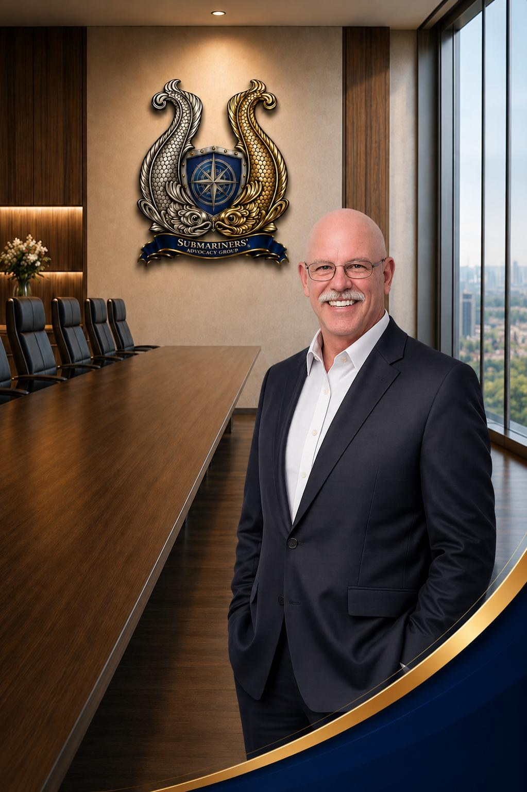

Vice Chairman
Charles “Chuck” Sanders
Charles “Chuck” Sanders serves in a leadership role within the Submariners’ Advocacy Group (SAG), supporting the organization’s mission to advocate for U.S. Navy Submariners, veterans, and their families. A proud member of the Silent Service community, Chuck brings decades of technical expertise, operational experience, and continued dedication to supporting fellow veterans and Submariners.
During his naval career, Chuck served in the United States Navy Submarine Force, where he developed the technical discipline, operational focus, and mission-oriented mindset that would continue to define both his military and civilian careers. His time within the Silent Service reinforced the values of professionalism, accountability, teamwork, and service that remain central to his work today.
Following his military service, Chuck built an extensive civilian career centered on advanced electronics, telecommunications, and network infrastructure systems. From 1991 through 2001, he served as a Senior Electronic Engineering Technician with the Federal Aviation Administration (FAA) in the Alaska Region, supporting critical technical and communications infrastructure in one of the nation’s most demanding operational environments.
Chuck later continued his technical and public service career with the State of Missouri Department of Higher Education and Workforce Development, where he served from 2002 through 2024 as both a Senior Telecommunications Technician and Senior Network Infrastructure Technician. Throughout this career, he supported complex communications and network systems while contributing to the operational reliability and technological infrastructure supporting higher education and workforce development initiatives across the state.
Chuck’s combined background in submarine operations, advanced technical systems, telecommunications, and public-sector infrastructure support provides valuable perspective within SAG’s leadership team. His experience reflects a lifelong commitment to disciplined service, technical excellence, and supporting both the veteran and Submarine communities.
Within SAG, Chuck supports initiatives focused on advocacy, organizational growth, awareness, and strengthening support networks for current and former Submariners. His dedication reflects SAG’s core values of integrity, professionalism, and service to the Silent Service community.
Chuck remains committed to supporting fellow Submariners and helping ensure their service, sacrifices, and long-term health concerns continue to receive meaningful advocacy and recognition.